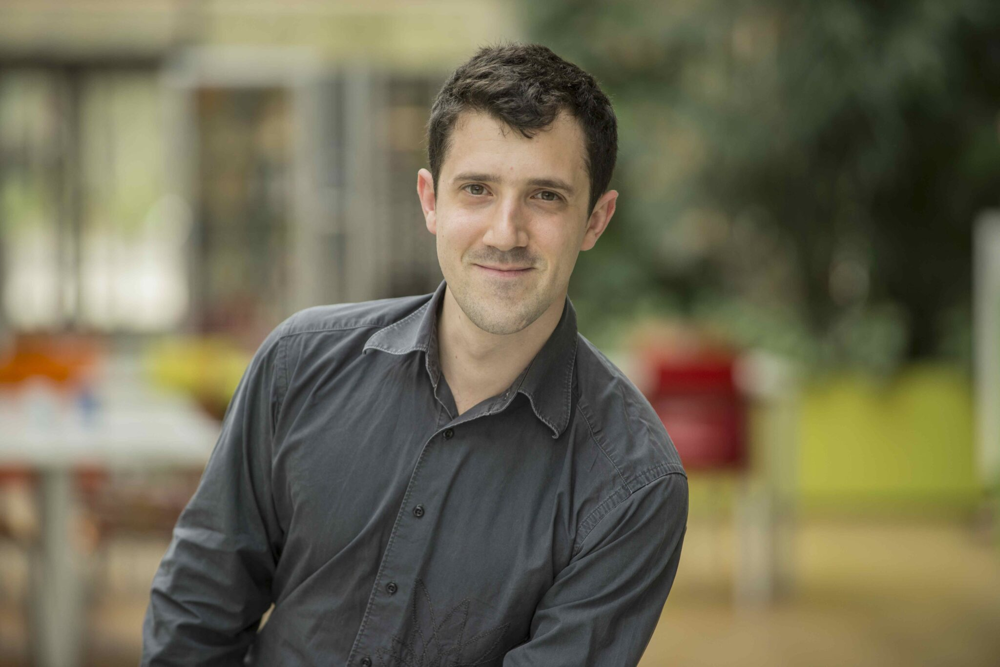

I am a Research Scientist (Chargé de Recherche, CRCN) in the AnankΞ team at CMAP, École polytechnique, Inria Saclay.
I am also a Professeur Chargé de Cours (PCC, 64h) at CMAP, École polytechnique since November 2024.
My research interests lie in the mathematical and numerical analysis of PDEs, with emphasis on wave propagation in multi-scale media, robust numerical methods (spectral element methods, IMEX schemes), and inverse problems for medical imaging and non-destructive testing.
Check out my research, publications, and the OndoMathX software.
Google Scholar · ORCID · HAL